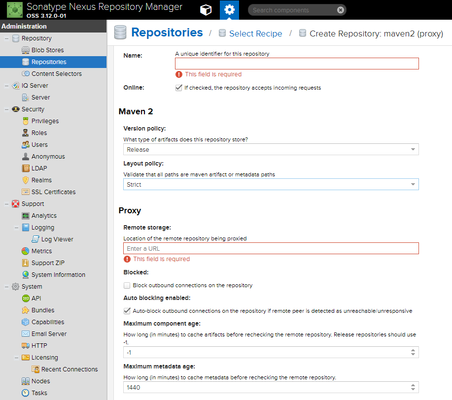

在搭建篇介绍了Nexus3的安装、启动、以及添加一个自己的maven-hosted私库。
这一篇介绍Maven配置使用Nexus私库
Nexus添加Maven库
添加代理库
点击Create repository按钮选择maven2(proxy)

设置仓库的名称Name，我填写aliyun-central
Maven2 Version policy 可以设置储存的构件版本，Release或Snapshot
Proxy Remote storage 填写需要代理的远程库地址
- Maven中央库
https://repo1.maven.org/maven2/ - 国内阿里源
http://maven.aliyun.com/nexus/content/groups/public
这里我选择填写阿里源（Maven中央库默认列表里就有：maven-central）
添加组仓库
Create repository按钮选择maven2(group)
组仓库的名称我填写my-public
组仓库的重点配置就是
Group Member repositories
这里的排序策略是优先从maven-public取构件，取不到从aliyun-central取，任然取不到的话最终从maven-central取，这里的maven-public也是个组仓库，实际组装了maven-releases和maven-snapshots。
创建之后重新进入my-public的编辑页面会出现这个仓库的URL，下面会用到。
Maven配置
用过Maven的都会知道Maven有一份settings.xml 出现在两个地方
~/.m2/settings.xml仅作用于当前用户$M2_HOME/conf/settings.xml作用于该系统所有用户
在settings.xml 的profiles·标签内添加如下内容启用自己建的库
1 | <profiles> |
实际上如果单独给某个项目使用也可以在pom.xml内添加<repositories>节点的内容，一般不推荐。
给<mirrors>节点配置把所有请求连接到Nexus私库
1 | <mirror> |
给<servers>节点配置nexus的登录账户，这里的id值要跟<repository>里的id配置一致
1 | <server> |
Java构件的上传
在pom.xml里需要配置发布的地址
1 | <distributionManagement> |
执行命令
1 | mvn clean deploy |
发布构件